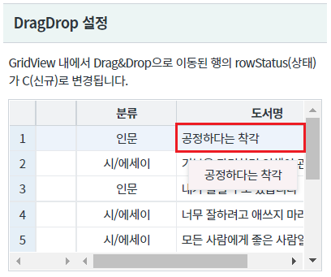
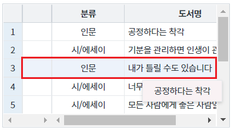
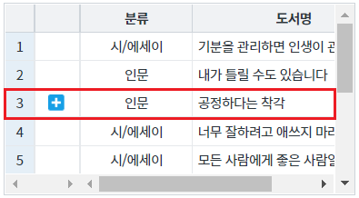
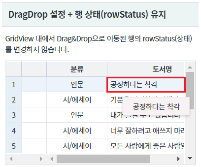
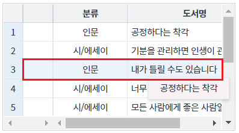
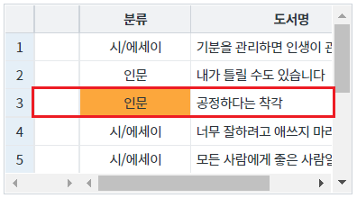
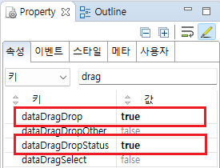
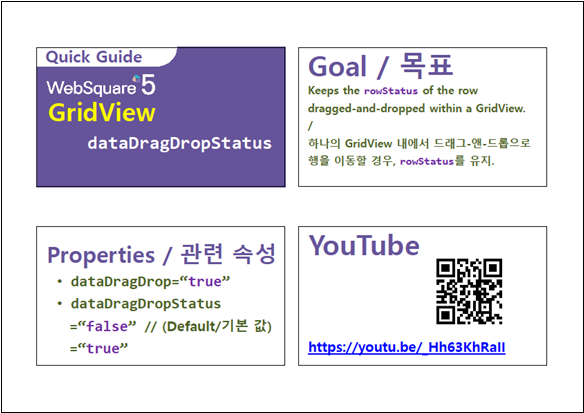

GridView의 Drag&Drop 기능의 옵션 중 하나인 "dataDragDropStatus" 속성 예제입니다. 속성 "dataDragDropStatus"은 Drag&Drop을 통해 GridView 내부에서 행이 이동된 경우 rowStatus(행 상태)를 변경하지 않는 기능을 제공합니다.
타 GridView의 행이 Drop된 경우는 "dataDragDropStatus" 설정과 무관하게 "C"(신규) 상태로 변경됩니다.
DragDrop 설정
DragDrop 설정 + 행 상태(rowStatus) 유지
GridView 내에서 Drag&Drop으로 행을 이동했을 때 rowStatus가 "C"(신규)로 변경되는 것을 확인합니다.
[브라우저(Chrome) 실행 예시]

[브라우저(Chrome) 실행 예시]

이동된 행의 rowStatus값이 "C"(신규)로 변경됩니다.
[브라우저(Chrome) 실행 예시]

GridView 내에서 Drag&Drop으로 행을 이동했을 때 rowStatus가 변경되지 않는 것을 확인합니다.
[브라우저(Chrome) 실행 예시]

[브라우저(Chrome) 실행 예시]

이동된 행의 rowStatus값이 변경되지 않는 것을 확인합니다.
[브라우저(Chrome) 실행 예시]

GridView와 연결된 DataList 생성 및 연결 방법은 생략되었습니다.
GridView의 속성을 정의합니다.
[필수] dataDragDrop="true" //[default:false, true] 동일 gridView 또는 서로 다른 gridView 간의 데이터 드래그-앤-드롭을 허용
[필수] dataDragDropStatus="true" //[default:false, true] 데이터를 드래그-앤-드롭을 통해 이동시켰을 때 rowStatus를 유지
그림 1.웹스퀘어5 SP5 스튜디오의 Property View(속성창) 예시

[소스 코드 예시]
<!-- gridView 의 소스 본문 예시 --> <w2:gridView dataDragDrop="true" dataDragDropStatus="true" dataList="data:dlt_books_2"> <!-- 중략 --> </w2:gridView>
dataDragDrop
dataDragDropStatus
[웹스퀘어5 SP5 개발 가이드] GridView
링크 : https://docs1.inswave.com/sp5_user_guide/86bdcf48029b958b
[웹스퀘어5 SP5 개발 가이드] GridView 행 드래깅
링크 : https://docs1.inswave.com/sp5_user_guide/86bdcf48029b958b#146e3c43f7e89d7e
[웹스퀘어5 SP5 개발 가이드] GridView 드래깅을 통한 행 이동 시 rowStatus 유지
링크 : https://docs1.inswave.com/sp5_user_guide/86bdcf48029b958b#d97ebbb64d10a427
GridView 드래깅을 통한 행 이동 시 rowStatus 유지
링크 : https://youtu.be/_Hh63KhRaII
